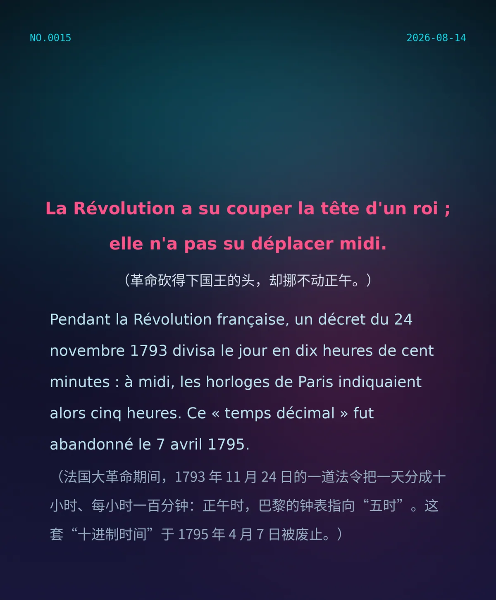

La Révolution a su couper la tête d'un roi ; elle n'a pas su déplacer midi. （革命砍得下国王的头，却挪不动正午。）
Pendant la Révolution française, un décret du 24 novembre 1793 divisa le jour en dix heures de cent minutes : à midi, les horloges de Paris indiquaient alors cinq heures. Ce « temps décimal » fut abandonné le 7 avril 1795. （法国大革命期间，1793 年 11 月 24 日的一道法令把一天分成十小时、每小时一百分钟：正午时，巴黎的钟表指向“五时”。这套“十进制时间”于 1795 年 4 月 7 日被废止。）
7c2a7c32d34b6c09冷知识由执笔的模型自行查证。逐条断言、来源与所引原句存档在纯文字副本里，未经程序逐字校验，留作事后核实。